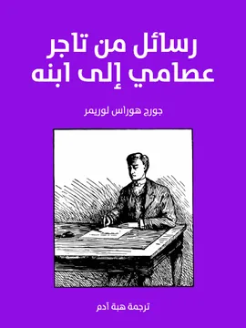

رسائل من تاجر عصامي إلى ابنه

قراءة عربية أصلية محددة النطاق في الصفحات 9 إلى 14 من ملف PDF المرتبط، وليست تلخيصا كاملا للكتاب. نناقش ما تدعمه هذه المقاطع فقط.
نصائح تاجر لحوم لابنه في هارفارد
في أول أكتوبر من تسعينيات القرن التاسع عشر يكتب جون جراهام، تاجر اللحوم العصامي في «يونيون ستوك ياردز» بشيكاجو، رسالته الأولى إلى ابنه بيريبون الذي استقر للتو في صف السنة الأولى بجامعة هارفارد: وصلت أمك بسلام صباح اليوم وأكدت عليّ أن أوصيك ألا تفرط في المذاكرة، وأنا من جهتي أطلب منك ألا تُقصّر فيها أيضًا، فما أرسلناك إلى هارفارد إلا لتنهل من معين العلم الوفير والعذب. هكذا تمضي الرسائل بلغة أب صنع نفسه من الصفر، يمزج النصيحة العملية بالسخرية الودود: بعض الناس يعرف وضاعة شرب الويسكي لأبٍ سكير، والبعض يحصل على التعليم من الأساتذة والدبلومات، وطالما حصل المرء على الشيء الجيد واحتفظ به فلا فرق كبير في الطريقة. كلاسيكية أمريكية مبكرة في أدب النجاح (١٥٨ صفحة) حافظت على طرافتها أكثر من قرن.
زاوية وحدود القراءة
قراءة موجزة من ص ٩ إلى ص ١٤ من أصل ١٥٨ صفحة، تعرض الرسالة الأولى ومطلع الثانية، لا الرسائل كاملة.
الطبعة والقراءة
هذه الترجمة العربية صادرة ومتاحة مجانًا من مؤسسة هنداوي بشكل قانوني؛ حيث إن نص العمل الأصلي يقع في نطاق الملكية العامة تبعًا لقوانين الملكية الفكرية.
تنزيل PDF المجاني ↓ القراءة والمصدر الرسمي ↗